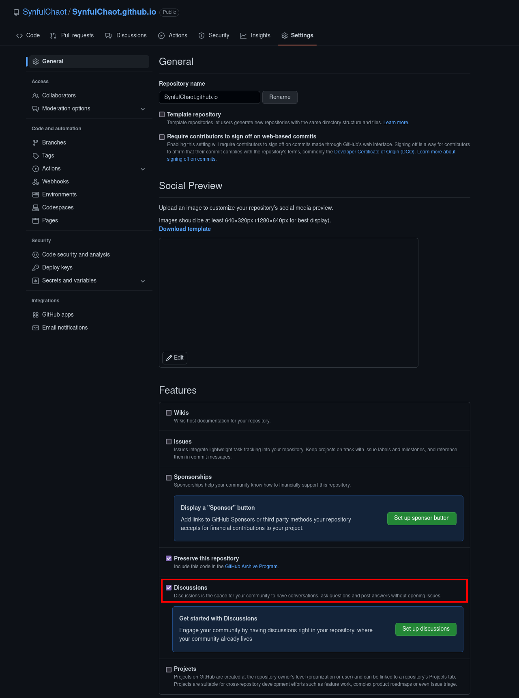
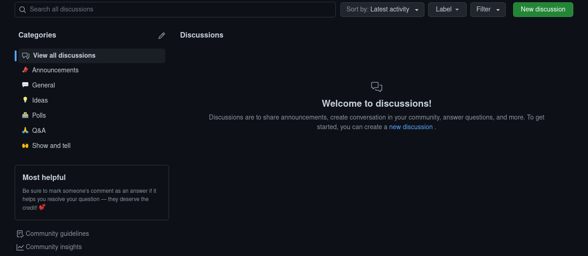
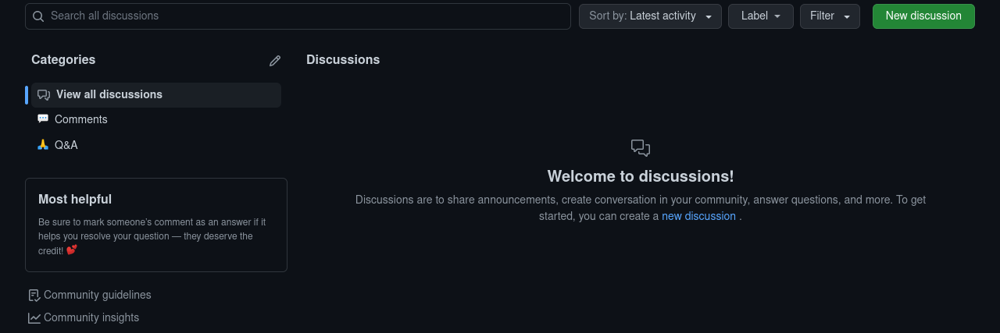
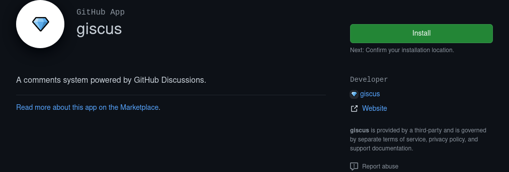
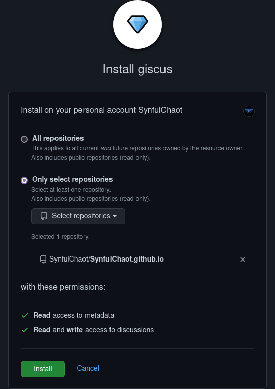
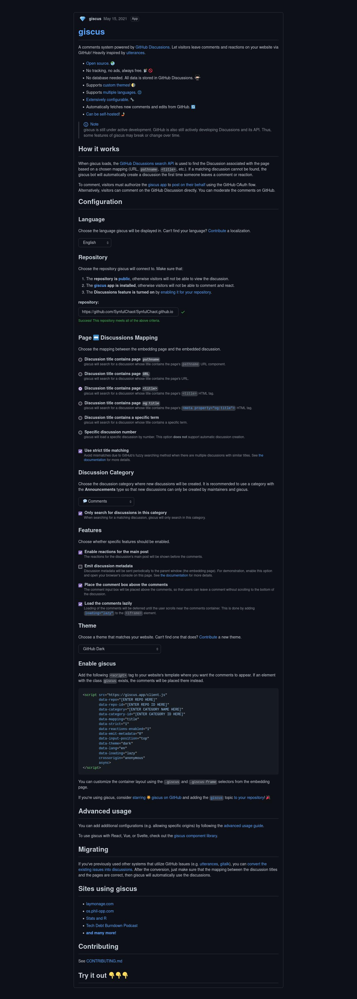

Enabling Discourse
Now back when I was first considering this blog, a good few years ago, I had no intention of comments. It was purely going to be a place for me to dump my ideas and thoughts and all that. Nothing less. Nothing more.
As I got to thinking about it, though, I realized that, despite the risks that are inherent in opening yourself up to the feedback of random Intarweb strangers, the benefits outweigh the risks. I mean sure some people are absolutely awful examples of our species, but at the same time it can be helpful to hear what others think about your content. Perhaps people might want more details, or sometimes less, or are curious about other things that you may usually cover. Perhaps someone will correct you, in which case not only you, but also your readers, get to learn new things. Perhaps they want to point you towards things that are related or that they think you might be interested in. Or, perhaps, people just want to thank you for your content. Whatever the reason, comments can be a real boon.
And, lets be honest, if you don’t have comments where you can see them, if enough people are reading your blog then it’s likely that they’ll start up some comments where you can’t … or at least where you don’t know where they are, but the difference there really is trivial if you think about it.
So without further ado!
Why giscus?
There are a great many commenting systems out there, each one with their own pros and cons. For myself, though, many of them weren’t options at all. Namely I wanted something simple, secure, no tracking, easy to moderate, and preferably free … so obviously Disqus wasn’t an option, what with it’s long and storied history of privacy concerns and security breaches.
Now I could run through every single option out there that I have looked into, and perhaps sometime I will, but for the moment that would take far too long and I’d prefer to focus on giscus and it’s spiritual predecessor, utterances. Both of these caught my attention as they utilize GitHub’s built-in functionalities to store and moderate comments. This way, at least if you’re hosting on GitHub Pages, your website and the related comments are all in the same place. And, even if you’re hosting your site elsewhere, you can still utilize a GitHub repo to store and moderate the comments. Also, both of them can be self-hosted, so if you’re willing to do the work then you can have an extremly robust blog with minimal external dependencies. As for the most important parts: no ads, no tracking, secure, and free. giscus and utterances, however, differ in one major aspect, each with their own pitfalls.
- utterances was the first of the GitHub-based commenting systems. It takes advantage of GitHub Issues to store the comments and the GitHub API to access and display them. The main downside comes from the fact that Issues were designed for just that: issues. As a result, while you can comment you can’t have nested comments. Also, in my opinion, it’s more than a bit clumsy to utilize issues to track conversations, but that’s really just a matter of preference.
- giscus, however, utilizes the much newer Discussions, a feature which is pretty much exactly what it says on the can. It is, specifically, designed for exactly the kind of role comments hold; to hold dialogue about a specific subject. In this case, a blog post. The biggest advantage, however, is that the comments can be nested, even if only one layer deep. I also find Discussions to be a far better way to interact with and especially to moderate the comments.
They do both share the same weakness, though … no anonymous comments. Sadly all comments require one to have a GitHub account to post. I hope this will change in the future.
Setting it up
Enabling Discussions
The easiest step. Just open up to the repo you’re using for comments (which doesn’t have to be the same repo as your blog!), jump over to the Settings tab, make sure you’re in the General menu on the left, then scroll down to Features and enable Discussions.

Cleaning up Discussions (optional)
This is entirely an optional step, but as I only really intend on using Discussions to handle comments (and perhaps an occasional Q&A) I really didn’t need all the other default categories. Plus I wanted to have a category specifically for comments instead of just clumsily borrowing the default ‘Announcements’ channel.
Defaults:

Custom:

Make sure your
Commentscategory is set with anAnnouncementdiscussion format so only admins and maintainers (and giscus!) can create new discussions.
Installing giscus
Go to https://github.com/apps/giscus and choose ‘Install’.

From here you simply need to select the repository you want it to be enabled for and, again, choose ‘Install’.

Configuring giscus
Configuring giscus is almost as easy as installing it. Just make your way over to https://giscus.app/
Enter in your repository here. It’ll let you know if your repo is ready (it should be!).
Choose your mapping. My own personal recommendation here is og:title. It’s not very self-explanatory, but <title> is the compiled page title, aka the one that will likely also have the name of your blog in it. Ask me how I know. og:title should contain what you are expecting, aka the clean title that will appear in the header of your blog posts.
{kind=link}
To make sure to avoid mistakes in the mapping I also recommend selecting strict title matching as that will embed an ‘invisible’ hash in the discussion’s description (you can see it if you edit the description) that it will match against.
From here select the category you set up in the previous steps and select the features you prefer. Now copy the customized <script> block from the page here. This is what we’ll need to implement it on your blog!

Adding giscus to your (Hugo) blog
Now this is where it gets fun, especially if you want to do it right … ‘right’ being a somewhat relative term, of course. Please do note that these steps are specifically tailored towards a Hugo blog. Also note this is if your particular theme does not already have giscus integration built in.
Now the instructions it gives are to add the <script> block from the previous step to your website’s template. Said template is likely to be located in the following directory:
/static/themes/<theme name here>/layouts/_default/single.html
If it is not there, please consult the documentation for your theme.
Now whilst you could just put that in there, it’s best not to directly overwrite the theme files, especially if you plan to keep the theme up to date. Instead we want to create a theme overrride. To do that we’ll copy the theme single.html file above to the following location:
/layouts/_default/single.html
Once there you’ll want to edit the file. Now scroll down to the bottom (or wherever you want the comments to be placed on your page) and add in the full <script> block you copied before. And that should be it!
But wait!
Now that is the way documented on https://giscus.app/, but there’s a better way that gives you more control, better integration, and moves the configuration options to the same place as the rest of your Hugo settings: the config.toml file (or, in my case, the config.json file) in the root of your blog directory.
Now we still want to edit that single.html file we created a moment ago, but instead of putting in the <script> block directly we want to add this line instead:
{{ partial "giscus.html" . }}
Now it’s time to create that giscus.html file. For this we want to create a blank file in the following location:
/layouts/partials/giscus.html
No open up that new file and here we would want to paste in that <script> block.
But.
That still doesn’t achieve our goal yet. After all, this would do nothing but move the location of the <script> block. Instead we should copy over the following code block:
{{- if isset .Site.Params "giscus" -}}
<div class="comments-giscus">
<script src="https://giscus.app/client.js"
data-repo="{{ .Site.Params.giscus.repo }}"
data-repo-id="{{ .Site.Params.giscus.repoID }}"
data-category="{{ .Site.Params.giscus.category }}"
data-category-id="{{ .Site.Params.giscus.categoryID }}"
data-mapping="{{ .Site.Params.giscus.mapping }}"
data-strict="{{ .Site.Params.giscus.strict }}"
data-reactions-enabled="{{ .Site.Params.giscus.reactionsEnabled }}"
data-emit-metadata="{{ .Site.Params.giscus.emitMetadata }}"
data-input-position="{{ .Site.Params.giscus.inputPosition }}"
data-theme="{{ .Site.Params.giscus.theme }}"
data-lang="{{ .Site.Params.giscus.lang }}"
data-loading="{{ .Site.Params.giscus.loading }}"
crossorigin="{{ .Site.Params.giscus.crossOrigin }}"
async>
</script>
<noscript>Apologies, but the giscus-powered comments require JavaScript to view. Sorry!</noscript>
</div>
{{- end -}}
Feel free to change up the text in the <noscript> block to whatever. That will appear if JavaScript is blocked, and it’s always useful to let people know that there are comments available when this occurs.
Now if you’re particularly savvy you might be able to guess what those parameters are referencing. In case you’re newer to things, and as confirmation to both groups, what that is pointing to is specific variables set in the config.toml or config.json file … or, more accurately, specific variables that will be set.
Let’s get on that!
Now open up your config file and, if you’re using JSON, add the following, filled in, of course, with the values from the <script> block from https://giscus.app/:
{
"params": {
"giscus": {
"repo": "",
"repoID": "",
"category": "",
"categoryID": "",
"mapping": "",
"strict": "",
"reactionsEnabled": "",
"emitMetadata": "",
"inputPosition": "",
"theme": "",
"lang": "",
"loading": "",
"crossOrigin": ""
}
}
}
Obviously merge this in with your existing file properly. I assume if you’ve chosen to use JSON you’ll understand how to do so. In case you don’t, well, I’ll cover JSON soon enough.
If, instead, you are using the more typical default of TOML, this is instead what you want to add, again with adding in the values from the <script> block as mentioned above:
[params.giscus]
repo = ""
repoID = ""
category = ""
categoryID = ""
mapping = ""
strict = ""
reactionsEnabled = ""
emitMetadata = ""
inputPosition = ""
theme = ""
lang = ""
loading = ""
crossOrigin = ""
And with that, congratulations, you should have fully functional comments on your blog!